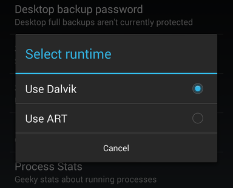

ART is a new Android runtime which was introduced experimentally in the 4.4 release KitKat.If you have KitKat then you can see the preview in "Settings> Developer Options> Select Runtime".

Hmmm, but why did Google switched from Dalvik to ART?
ART vs Dalvik / AOT vs JIT:
Android apps are deployed in Dalvik bytecode, which is portable, unlike native code. In order to be able to run the app on a device, the code has to be compiled to machine code.
Dalvik is based on JIT (just in time) compilation. It means that each time you run an app, the part of the code required for its execution is going to be translated (compiled) to machine code at that moment. As you progress through the app, additional code is going to be compiled and cached, so that the system can reuse the code while the app is running. Since JIT compiles only a part of the code, it has a smaller memory footprint and uses less physical space on the device.
ART, on the other hand, compiles the intermediate language, Dalvik bytecode, into a system-dependent binary. The whole code of the app will be pre-compiled during installation (once), thus removing the lag that we see when we open an app on our device. With no need for JIT compilation, the code should execute much faster.
Except for the potential speed increase, the use of ART can provide an important secondary benefit. As ART runs app machine code directly (native execution), it doesn't hit the CPU as hard as just-in-time code compiling on Dalvik. Less CPU usage results in less battery drain, which is a big plus for portable devices in general.
So why wasn't ART implemented earlier?
Let's take a look at the downsides of AOT compilation.
- First of all, the generated machine code requires more space than the existing bytecode.
- Moreover, the code is pre-compiled at install time, so the installation process takes a bit longer.
- Furthermore, it also corresponds to a larger memory footprint at execution time.
- This means that fewer apps run concurrently.
When first Android devices hit the market, memory and storage capacity were significantly smaller and presented a bottleneck for performance. This is the reason why a JIT approach was the preferred option at that time. Today, memory is much cheaper and thus more abundant, even on low-end devices, so ART is a logical step forward.